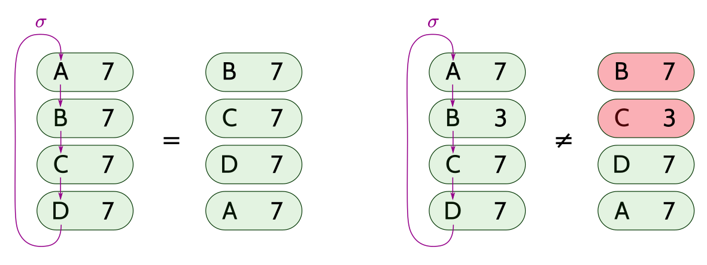

置换证明
假设halo2电路中的门要“本地”操作（就是在当前行或者事先定义好的相关行进行操作） 这通常需要将某个任意单元格的值拷贝到当前行，以便在门中使用。该工作就由一条相等约束来描述， 该约束就强制要求源和目的单元格中包含相同的值。
我们通过构造一个代表这些约束的置换来实现这些相等约束，进而在最终的证明中包含一个置换证明来确保约束成立。
相关记号
置换就是一个集合以一对一的方式自己到自己的一个映射。一个置换可以唯一分解成多个轮换的组合（每个轮换都是首尾相接的，轮换和轮换之间排序）。
通常，我们使用 轮换记号 来表示置换。令 代表如下轮换： 映射到 ， 映射到 ， 映射到 （显然，该法则可以推广到任意大小的轮换）。把两个或更多的轮换一个接一个的写在一起就代表了一个相关置换的组合。 比如， 就代表了 映射到 ， 映射到 ， 映射到 ， 映射到 的置换。
构造置换
目标
我们希望构造这样一个置换，在同一个相等约束下的这些变量自己形成一个轮换。举例来说，假设我们有一个定义了如下相等约束的电路：
由上可得相等约束集合 和 。于是我们构造了如下的置换：
该置换就定义了一个由 到 的一个映射。
算法
我们需要持续记录这些轮换的集合，实际上也就是 一些不相交集合的集合. 我们已经知道针对该问题的一种高效的数据结构；为了简单起见，我们选择了一个虽然不是渐进最优，但是确是很容易实现的方法。
我们采取如下方法来表示当前的状态：
-
数组 来表示置换本身；
-
一个辅助的数组 用来记录每个轮换中代表元素；
-
还有一个数组 用来记录每个轮换的元素个数。
我们在一个给定的轮换 中选取一个不变的值 ，对每一个 中的元素 ， 都得到相同的值，即 。有了这个值，对于给定的两个元素 和 ，我们可以通过检查 是否成立，来快速判断它们是否在同一个轮换中。 也代表了包含 的轮换的大小。（只有 是有保证的，而不是 。）
本算法是以表示一个单位置换开始： 对所有 ，我们令 ，，和 。
按如下步骤增加一条相等约束 ：
-
检查 和 是否已经在同一个轮换中了，也就是检查 是否成立。如果是此种情况，那么不许做任何事情。
-
否则， 和 就一定分属不同的轮换。令 是相对大的轮换，而 则为相对小的那个， 如果 ，那我们就交换一下使其满足需求。
-
令 。
-
下一步对right（较小的）轮换中每一个元素 令 。
-
通过交换 和 中的元素（的轮换），将较小的轮换接入到较大的轮换中去。
举个例子，假设两个不相交的轮换 和 ：
A +---> B
^ +
| |
+ v
D <---+ C E +---> F
^ +
| |
+ v
H <---+ G
在增加约束 后，上文算法将得出如下的轮换：
A +---> B +-------------+
^ |
| |
+ v
D <---+ C <---+ E F
^ +
| |
+ v
H <---+ G
Broken alternatives
如果不检查 和 是否在同一个轮换中，那么我们可能就会丢掉某些相等约束。 举个例子，如果我们有如下的约束:
如果在处理一条新的相等约束时仅仅只执行上述算法中的第五步，那么我们得到的最终结果将是 ，而不是正确的结果 。
证明说明
我们需要检查 列中所有单元格的置换，该 列分别由其拉格朗日基的多项式 来表示。
我们用 中不同的元素来标记 列中 每个单元格。
假设我们有基于这些标记的一个置换： 其中这些轮换就对应了相等约束。
我们考虑对 的集合，当且仅当对每对的label都按照 进行置换后，得到了与原集合相同的集合， 才能证明集合中的每个对是相等的。

因为所有的标记都是不同的，最终就可以用一个代表相等约束的集合来代替多个代表相等关系的集合，而这进一步使我们可以用乘积证明来检查置换的正确性。
令 是 次单位根， 是 次单位根，满足 ，其中 是奇数并且 。 在置换证明中，我们用 作为第 行、第 列的单元格的标记。
由 个多项式组成的一个向量，其中对每一项 满足 。
注意，可以用一个包含 个多项式的向量来标识一个置换，其中每一项 都满足 。
我们用一个挑战 将每一个 对压缩成 。与在 查找表 的积证明中所做的一样，我们也使用一个挑战 来盲化我们每一个积项。
假定有一个在 列，即： 上的一个置换，表示为 ，我们想要确保如下等式成立：
上式中 代表置换前的对 ， 则代表其置换的对 。
令多项式 满足 并且对 :
接下来只需要强制满足如下的规则对证明来说就足够了：
注意，上述第一条规则对其处理的多项式的假设是，其约束的列数 要符合PLONK设置的次数界限。接下来，将在下文阐述如何处理列数超出边界的情况。
用于表示一个置换的经过优化的简单方法是由Vitalik Buterin为 PLONK 提出的，并且在 PLONK 论文的第8节有阐述 注意在实践中，对 Halo 2 所用的曲线来说，其有相等约束的列数通常不会超过其边界 ， 在此条件下，所有的 就都是不同二次平方非剩余。
零知识调整
与查找表证明类似，我们也需要调整上述的证明来处理每列的最后 行，因为它们被填入了随机值（也就是这些行不满足上面的积证明）。
我们限定有用的行数是 ，同时我们增加两个选择子，这两个选择子与查找表证明中定义的是一样的：
- 只在最后 行设为 ，而在其他地方则为 。
- 则旨在 行设为 ，其他行则为 （这就是说，它只在有用行和盲化行之间的那一行起作用）。
我们将在那些有用的行真正应用上文的积规则：
在 行的的规则仍然是相同的，即：
由于我们再也不能依赖全景来确保每一个积证明 都在 等于 ，那么我们实际上应该约束 。这也就带来了在查找证明中同样的问题。于是，我们也就需要允许 等于 或者 ：
通过这种方式，我们就获得了良好的完备性和零知识性。
支持大列
在halo2的实现中，实际上并不限制相等约束可以占用的行数。因此，就必须解决上述方法中可能导致的积规则中的多项式可能超出PLONK设置的次数边界的问题。一个简单办法是直接升高次数边界，但是在没有其他规则需要用到如此大的次数的情况下，这一办法是低效的。
另一种方法，我们把积证明分割成 个，每个都是其中 列的证明，即：同时增加一条规则，就是每个积（证明）最终的积被设置成下一个积（证明）的起始值。
这就是说，对于 我们有：
简单起见，上述规则假设总列数是 的整数倍； 如果不是，那么我们就让最后一个列集合少于 个项。
对第一个列集合，我们有
而对于剩余的每一个列集合 ，我们将使用如下规则将 拷贝到下一个列集合的最开始，：
与起始算法相同，对最后一个列集合，我们约束 为 或者 。
与上文的证明相同，这也提供了同样的完备性和零知识性。